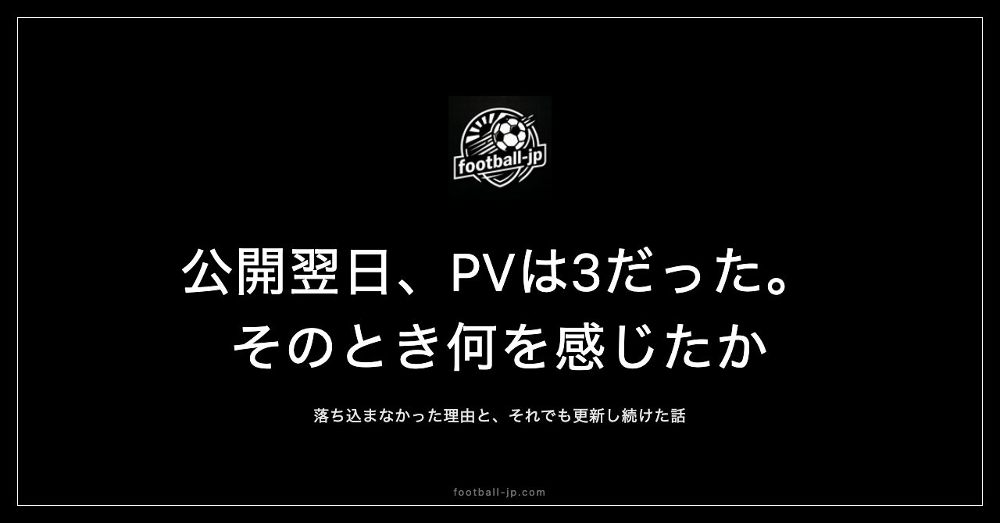

個人サイトを公開して1か月、PV3だった日のこと
football-jp.comの公開翌日、アクセス解析に出た数字は「3」だった。予想はしていた。それでも実際に数字を見るまでの期待と、見た後の「まあ、そうか」という感覚——その間にあったものの記録。

公開当日：達成感より緊張が勝った夜
football-jp.comの公開は2026年5月6日だった。数か月の開発期間を経て、ようやくインターネット上に出た日だ。SNS、note、Xで告知し、その夜はアクセス解析をずっと眺めていた。
公開直後の感覚は「達成感」ではなく「緊張」だった。手元の環境でしか動いていなかったものが、外部から誰でもアクセスできる状態になる——日本時間の表示は正しいか、配信局の情報は最新か、選手ページにアクセスしてエラーが出ないか。その夜だけで確認を10回以上繰り返した。本番は翌日の数字が出てからだと、どこかで感じていた。
「3」という数字が告げたこと
翌朝のアクセス解析に表示された数字は「3」だった。1日のページビューが3——もしかしたら3人ではなく、自分が3回確認した数かもしれない。
予想していたほど落ち込まなかった。告知初日から2日目への減少は必然で、検索エンジンにインデックスされるには時間がかかる——そう知識としては理解していた。しかし「知っている」と「実際に見る」の間には隙間がある。「3」という数字を実際に目にするまで、どこかで「もう少し多いかもしれない」という期待が生きていたことに、見た後で気づいた。その期待が「まあ、そうか」という感覚に変わった。その日の残りは試合日程の更新をした。「見られていないから止める」という発想は出てこなかった。
3が続いた2週間と、感情が落ち着くまで
翌日は5、その次は8、そしてまた3——という変動が2週間続いた。毎朝アクセス解析を開くのが最初のルーティンになっていたが、感情の揺れ幅は想定より小さかった。
事前に「公開直後の個人サイトはPVがほぼゼロから始まる」という情報を複数見ていたことが、衝撃を和らげた。「知っていた」という事前知識が、体験のショックをある程度吸収する。この吸収効果はPV3の日々を通じて実感した。
「誰かのため」と「自分のため」の断絶
PV3の日に一つの気づきがあった。football-jp.comは「自分が使うために」作ったサイトだ。しかし公開した瞬間から「誰かに見てもらいたい」という感情が自動的に立ち上がっていた。その二つの動機の間にずれが生まれていた。
自分のために作ったのであれば、PVが3でもサイトの使用価値は変わらない。しかし「公開する」という行為は「評価の文脈に置く」ということでもある。評価の文脈に入った瞬間から、数字への感情的な反応が始まる。「作ること」と「公開すること」は本質的に別の行為で、公開はその動機を部分的に書き換える。PV3の日はその構造を実感した日だった。
更新を続けた理由：自分が使っていたから
PV3前後の数日が続いても、データ更新は止めなかった。毎日football-jp.comを開いて試合スケジュールを確認し、情報が古ければ更新する——この行動が止まらなかったのは、誰かが見ているかどうかに関係なく自分が使っていたからだ。
公開から3週間後、アクセス解析に「organic」という流入経路が初めて現れた。告知による流入ではなく、検索で発見されたことを意味する。「このサイトが独立して存在し始めた」と感じた瞬間で、PV3の数日間を経験していたからこそその感覚が際立った。
関心の重心が「評価」から「機能」に移った瞬間
公開から2週目に入ると、毎朝アクセス解析を開く頻度が自然に下がった。「今日何人来たか」より「今日のデータは正しく更新されているか」のほうが先に気になるようになった。
これは関心の重心が「評価されたいか」から「ちゃんと動いているか」へ移動したことを示す。数字の大きさより「どのキーワードで来たか」「どのページが読まれたか」のほうが意味を持ち始めた。PV3の日々は、この転換が起きるまでの準備期間として機能した。
「存在する状態になる」ことが公開の意味だ
公開直後のPVが少ないことは、作ったものの質とは独立した事実だ。知られていないだけで、存在はしている。PVがゼロでも、誰かが検索したときにそこにある——それが公開することの本質的な意味だ。
PV3の日から時間が経った今、あの「まあ、そうか」という感覚が今のfootball-jpの土台になっている。底値を実際に体験したことで、「あとは上がるだけ」という開き直りが基盤として機能し続けている。存在し続けることが、数字を積み上げることより先にある。